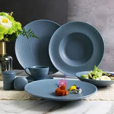

Plate

A plate is a shallow, usually circular dish used for
serving or eating food, commonly made from ceramic, glass, or plastic. In other contexts,
it refers to a thin structural piece (like metal plating), a section of the Earth’s
lithosphere in tectonics, or a, "home plate" in baseball.